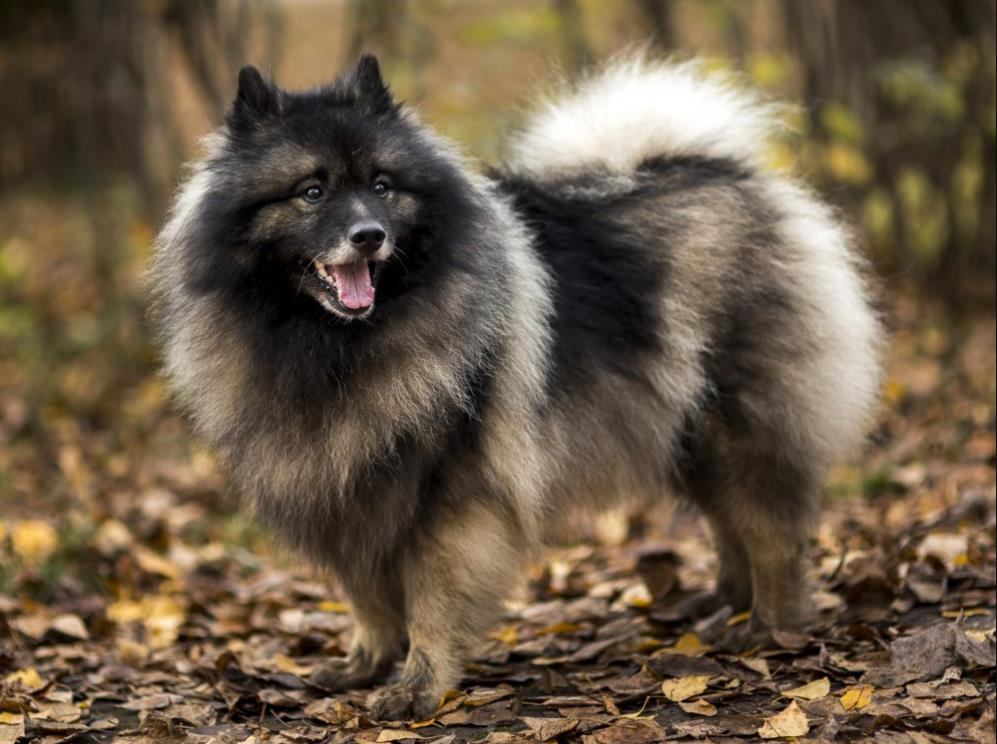

Еще одно название – Баржевая собака, появилось из-за назначения песика: сопровождение моряков на переправе для защиты припасов от грызунов. Родилась порода в Голландии от Немецкого шпица, долгое время была символом повстанческой патриотической организации в Нидерландах.

Вольфом назван Шпиц не случайно. Эта собака самая оригинальная по окрасу: серо-черная шерсть, черные очки, контрастные белые и черные полосы. По форме тела, черепа, морды и конечностей полностью совпадает с соседями по группе и секции (европейские шпицы). Вырастают до 48 см в холке.
Это семейные собаки, они быстро привязываются к хозяевам, чувствуют невероятную тоску от расставаний. Кеесхонды обожают детей, питомцев, окружающих людей (даже незнакомцев), но чувствуют опасность и могут предупредить домочадцев. Они показывают хорошие результаты в работе, послушные и выносливые, могут долго тренироваться, быстро схватывают команды.